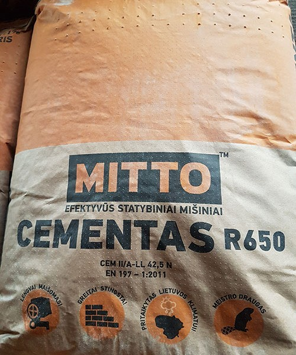

Cementas
 Ž.Ū. Technika Apie mus Lojalumas Karjera Parduotuvių tinklo kontaktai Susisiekime lytagra@lytagra.lt Registruotis / Prisijungti Prisijungti Nesate užsiregistravę? Registruotis Prekių katalogas Originalios ž. ū. tech. dalys Diržai Kiti diržai Pjaunamosios diržai Transportiniai diržai Variklio diržai Vintiliatoriaus diržai Dylančios dalys Krautuvų dylančios dalys Kombaino dylančios dalys Kitos dylančios dalys Plūgų dylančios dalys Traktoriaus dylančios dalys Žolės dorojimo mašinų dylančios dalys Žemės dirbimo technikos dylančios dalys El. sistemos dalys Akumuliatoriai Davikliai, sensoriai, jungikliai, rėlės ir kt. El. cilindrai Generatorius ir jo dalys Kitos el. sistemos dalys Starteriai ir jų dalys Valdymo blokai Žibintai ir jų dalys Filtrai Adblue filtras Hidraulikos filtras Kabinos filtras Kiti filtrai Kondicionieriaus filtras Kuro filtras Oro filtras Transmisijos filtras Variklio alyvos filtras Hidraulinės sistemos dalys Cilindrai ir jų dalys Hid. akumuliatoriai ir jų dalys Hidraulinės jungtys, movos ir sujungimai Kitos hidraulinės dalys Siurbliai ir varikliai Vožtuvai, skirstytuvai ir jų dalys Kabinos, rėmo, apdailos ir kėbulo dalys Dangčiai Durys Kabinos apdailos dalys Kitos kabinos, rėmo, apdailos ir kėbulo dalys Pakabinimo sistemos dalys Rėmas Sėdynė ir jos dalys Sparnai ir kėbulo apdaila Stiklai Tvirtinimo dalys Kombaino sistemų dalys Elevatoriai ir sraigės Grūdinės sistemos dalys Kitos kombaino sistemų dalys Kūlimo sistemos dalys Nuožulnios kameros dalys Pjaunamosios sistemos dalys Smulkinimo sistemos dalys Separavimo sistemos dalys Valymo sistemos dalys Kondicionieriaus sistemos dalys Kompresorius ir jo dalys Kitos kondicionierių dalys Radiatoriai ir jų dalys Priedai ir aksesuarai ir kt. Aksesuarai Drabužiai Kiti priedai Priedai Žaislai Purkštuvų dalys Dozatoriai ir jų dalys Kitos purkštuvų dalys Purkštukai ir jų dalys Siurbliai ir jų dalys Sijos Ratai ir jų dalys Kitos ratų dalys Padangos Ratlankiai Tvirtinimo elementai Stabdžiai ir jų dalys Hid. jungtys Kitos stabdžių dalys Pagrindinis stabdžių cilindras ir jo dalys Rankinis stabdis ir jo dalys Stabdžių diskai / būgnai Suportas ir jo dalys Vakumo siurblys ir jo dalys Transmisijos, reduktorių ir ašių dalys Grandinės ir jų dalys Galinis tiltas ir jo dalys Kardanai ir jų dalys Kitos transmisijos dalys Movos ir jų dalys Pavarų dėžės dalys Priekinio tilto dalys Rektoriai ir jų dalys Sankabos dalys Važiuoklės dalys Varikliai ir jų dalys Aušinimo sistema Alkūninio veleno sistema Cilindrų galvutės dalys Išmetimo sistema Kuro sistema Kitos variklio dalys Oro kompresorius ir jo dalys Paskirstymo sistema Turbina ir jos dalys Tarpinės ir riebokšliai Tepimo sistemos dalys Tvirtinimo elementai Variklio bloko dalys Vairavimo sistemos dalys Antgaliai, traukės Hidraulinės jungtys Hid. siurbliai ir jų dalys Kitos vairavimo sistemos dalys Vairo kolonėlė ir jos dalys Ž. ū. technikos dalys Filtrai Hidraulikos Kiti filtrai Kuro Oro Salono Tepalo Guoliai Adatiniai Korpusiniai Kūginiai Rutuliniai Hidraulinės sistemos dalys Antgaliai žarnoms Hidrauliniai cilindrai Hidrauliniai paskirstytojai Hidrauliniai siurbliai Hidrauliniai varikliai Hidraulinės žarnos Hidrauliniai sujungimai, adapteriai, vamzdeliai Hidrauliniai vožtuvai, kranai, davikliai ir kt. Žarnų apsaugos priemonės Javų kombainų atsarginės dalys Pjaunamosios dalys Nuožulnios kameros dalys Kūlimo būgno ir valymo dalys Elevatorių dalys Rapso atpjovėjų dalys Smulkintuvo dalys Mechaniniai perdavimo komponentai Grandinės, sujungimai ir žvaigždutės Kardaniniai velenai ir dalys Šluotų segmentai Plūgų atsarginės dalys Ašys Atpjovimo peiliai Atramos Diskai Gredilo traukės Įvorės Kaiščiai Kaltai Kamporaižiai Kampai Keičiamos dalys Korpusai Laikikliai Lauko lentos Noragai Plūgų varžtai Priešplūgio verstuvės Stebulės Verstuvės prailgintojai Verstuvės Prikabinamos technikos dalys Bulvių sodinamųjų, kasamųjų dalys Grėblių - vartytuvų dalys Kultivatorių, germinatorių ir skutikų dalys Kratytuvų dalys Nvs traktorinių priekabų dalys Pašarų pakrovėjų ir dalytuvų dalys Presų dalys Purkštuvų dalys Siloso atkandėjų dalys Sėjamųjų dalys Srutovežių dalys Žoliapjovių, žolės smulkintuvų dalys Statybinės technikos dalys Greiderių peiliai Kaušo dantys Tvirtinimo detalės Traktorių dalys Aksesuarai ir kitos dalys Aušinimo sistemos dalys Elektros sistemos dalys Kabinos, kėbulo dalys Kuro sistemos dalys Prikabinimo ir kėlimo dalys Sėdynės Starteriai, generatoriai ir jų dalys Traktorių žibintai Važiuoklės dalys Variklio dalys Tvirtinimo detalės Kaiščiai, fiksatoriai Rutulinės jungtys Tempimo, spaudimo spyruoklės Padangos, ratlankiai, guma Padangos, kameros Traktorių padangos Sunkvežimių padangos Pramonės bei industrinės technikos padangos Miško technikos padangos Vasarinės lengvųjų automobilių padangos Žieminės lengvųjų automobilių padangos Ž. ū. mašinų padangos Sodo - daržo technikos padangos Kameros Ratų remonto medžiagos Ratlankiai Ratų dvejinimo sistemos Sunkvežimiams Traktoriams Ž. ū. technikai Ratų grandinės Krautuvams Sunkvežimiams Traktoriams Žarnos Aušinimo sistemoms Chemikalams, purkštuvams Dujoms Įsiurbimo guminės Įsiurbimo pvc Maisto produktams Naftos produktams Pneumatinėms stabdžių sistemoms Pvc žarnos be sutvirtinimo Pvz žarnos su sutvirtinimu Siurblinės rankovės Suspaustam orui Vandeniui Gumos dirbiniai Manžetai Rem. komplektai Riebokšliai Silikoninės žarnos Sniego verstuvų guma Techninė guma Termolakštai, motoritas Transporterių juostos, sujungimai Žiedai Diržai Industriniai Kombaininiai Presams Gyvulininkystės įr. bei prekės Bitininkystės reikmenys Elektriniai aptvarai ir jų sudedamosios dalys Baterijos, akumuliatoriai Elektriniai piemenys Izoliatoriai Kuoliukai Juostos, virvės, vielos Priedai Tinklai Elektriniai šepečiai ir jų dalys Elektriniai šepečiai Elektrinių šepečių dalys Fermų apšvietimas Apšvietimo sistemų dalys Automatinis apšvietimas Fermų vėdinimo įranga ir dalys Ventiliaciniai kraigai Vėdinimo įrangos dalys Ventiliavimo plyšių užuolaidos Gardai, atitvarai, pertvaros, tvoros Avių atitvarai Gardų tvirtinimo detalės Mėsinių galvijų atitvarai Melžiamų karvių atitvarai Gyvulinė druska Laižoma druska Laižalai Lisal se Lisal m Lisal Gyvulių priežiūros reikmenys Avių priežiūros reikmenys Galvijų priežiūros reikmenys Higienos prekės Kiaulių priežiūros reikmenys Naminių paukščių priežiūros reikmenys Pašarai, papildai Reikmenys kovai su kenkėjais Tvarto priežiūros reikmenys Triušių priežiūros reikmenys Veršelių priežiūros reikmenys Galvijų priežiūros staklės ir dalys Automatinės nagų priežiūros vonios Galvijų priežiūros staklių dalys Veterinarinės staklės Kilimėliai Guliaviečių kilimėliai Kilimėlių tvirtinimo dalys Vaikščiojimo takų kilimėliai Melžimo įranga, reikmenys, atsarginės dalys Filtrai Koštuvai Melžimo aikštelės Melžimo įrangos dalys Mobili melžimo įranga Maisto pramonės plovikliai Melžimo robotai lely Pieno indų, žarnų higiena Pieno melžimo linijos Plovimo priemonės melžimo įrangai Tešmens higiena Mėšlo šalinimo įranga ir dalys Mėšlo šalinimo įrangos dalys Mėšlo šalinimo robotai Skysto mėšlo maišytuvai Skysto mėšlo siurbliai Pieno aušinimo įranga ir dalys Atviro tipo pieno aušintuvai Pieno aušinimo įrangos dalys Šilumokaičiai Uždaro tipo pieno aušintuvai Vertikalūs pieno aušintuvai Pieno perdirbimo įranga ir dalys Pieno separatoriai Pieno pasterizatoriai Pieno šildytuvai Pieno perdirbimo įrangos dalys Pašarų ruošimo medžiagos Presavimo tinklas Šienainio plėvelė Silosinė plėvelė Silosavimo rankovės Špagatas presavimui Tentas šiaudams ir šienui uždengti Prekės smulkiems naminiams gyvūnams Graužikų maistas, skanėstai Higienos priemonės Kačių maistas, skanėstai Kraikas Paukštelių maistas, skanėstai Prekės graužikams Prekės katėms Prekės paukšteliams Prekės šunims Šunų maistas, skanėstai Prekės žirgams ir raiteliams Arklidžių inventorius Įrankiai kaustymui Kosmetika Pakinkstai Pašarai Prekės raiteliams Prekės žirgams Šėrimo įranga ir dalys Automatinės ėriukų ir ožiukų girdyklos Automatinės šėrimo sistemos Automatinės veršelių girdyklos Išleidimo į ganyklą vartai Lauko šeryklos Pašarų bokštai ir transporteriai Pašarų pristūmimo robotai lely Šėrimo įrangos dalys Metalai ir gaminiai, vamzdžiai Aliuminis Aliuminio lygūs lapai Aliuminio profiliai Aliuminio rifluoti lapai Alucinko skarda Alucinko juostos Lakštai Rulonai Armatūra Armatūra Apvalūs vamzdžiai Besiūliai Cinkuoti Elektra virinti Vandens - dujų Cinkuota skarda Cinkuotos juostos Lakštai Rulonai Dažyta skarda Poliesterio skardos rulonai Puralo skardos rulonai Dvitėjiniai profiliai Dvitėjinės sijos heb s355 Dvitėjinės sijos heb s275 Dvitėjinės sijos hea s355 Dvitėjinės sijos hea s275 Dvitėjinės sijos ipe s275 Dvitėjinės sijos ipn s275 Dvitėjinės sijos ipe s355 Dvitėjinės sijos ipn s355 Grotelės ir laiptų pakopos Grotelės Laiptų pakopos Tvirtinimo detalės Juostos Juostos s355 Juostos s235 Kampuočiai Cinkuoti lygiašoniai kampuočiai Lygiašoniai kampuočiai s355 Lygiašoniai kampuočiai s235, s275 Nelygiašoniai kampuočiai s355 Nelygiašoniai kampuočiai s235 Kvadratai Kvadratai s235 Lakštinis plienas Lakštai s355 Lakštai s355mc Lakštai s235 Prokarpiniai lakštai st3 Rifliuoti lakštai s235 Šalto valcavimo lakštai dc01 Loviniai profiliai Cinkuotos lovinės sijos Lovinės sijos upe s275 Lovinės sijos upn s355 Lovinės sijos pagal gost standartą Lovinės sijos upe s355 Lovinės sijos upn s275 Nerūdijantis plienas Nerūdijančio plieno lapai Nerūdijančio plieno profiliai Nerūdijančio plieno rulonai Nerūdijančio plieno strypai Profiliniai vamzdžiai Kvadratiniai s355 Kvadratiniai s235 Stačiakampiai s355 Stačiakampiai s235 Šešiakampiai Šešiakampiai strypai pl45, pl5 Spalvoti metalai Bronzos strypai Vario lapai Vario strypai Žalvario lapai Žalvario strypai Strypai Apvalūs strypai s355 Apvalūs strypai pl45 Apvalūs strypai pl40x Apvalūs strypai s235 Kalibruoti apvalūs strypai T formos profilis T formos profiliai s235 T formos profiliai s355 Viela Atkaitinta viela (minkšta) Cinkuota viela Plieninė viela Rifliuota viela (vr-1) Statybinės medžiagos, apdaila Apdailos dažymo įrankiai ir priedai Dažymo, tapetavimo įrankiai, priedai Gramdymo, glaistymo įrankiai, priedai Mūrijimo, tinkavimo įrankiai, priedai Apdailos medžiagos Akrilai Dažai, dažų priedai Glaistai, gruntai Hermetikai Lakas Montažinės putos Apdailos prekės Grindjuostės ir priedai Grindų danga Paklotas Plytelės Tapetai ir priedai Birios statybinės medžiagos Cementas Gipsas Kalkės Kreida Sausieji mišiniai Cheminės medžiagos Betono priedai Klijai Medienos apsaugos priemonės Rūdžių surišėjai Skiedikliai Durys, langai, jų priedai ir furnitūra Cilindrai (šerdelės) Durų, langų furnitūra Lauko durys Laiptai Lauko montuojamos spynos Pakabinamos spynos Rankenos Vidaus durys Vidaus montuojamos spynos Izoliacinės medžiagos Hidroizoliacinės medžiagos Kevalai Šilumos ir garso izoliacinės medžiagos Montavimo detalės, profiliai, kampai Fasadų montavimo sistemos Gpk montavimo sistemos Tinkavimo juostos, kampai Plytos, blokeliai, trinkelės Bortai Dujų silikato blogai Keraminiai blokai Keramzitbetonio blokai Keraminės plytos Klinkerio gaminiai Šamotinės plytos Silikatiniai blokai Silikatinės plytos Trinkelės Statybinės, baldinės plokštės Cemento drožlių plokštės Drėgmei atspari fanera Fanera Gkp, gkpi, gkpf plokštės Mpp medžio plaušo plokštės Osb Stogų danga Bituminiai banguoti lapai Beasbestinė danga Bituminės čerpelės Kraigai, vėjalentės, palangės Plieninė danga Prilydoma danga Skaidri armuota stiklo plastiko Statybinė mediena Lentos Tąšai Statybinės plėvelės Statybinės Stoginės Stiklo audiniai Statybiniai tinklai Armatūros fiksatoriai, klojimų priedai Armavimo tinkleliai Betonavimo tinklai Mūro tinklai Techninis plastikas Kaprolonas Organinis stiklas Polikarbonatas Poliamidas Tekstolitas Santechnika, šildymas, vėdinim Daugiasluoksniai vamzdžiai ir fitingai Kolektoriai Kolektorių spintelės Presuojamos jungtys Užveriamos jungtys Vamzdžiai Katilai Kieto kuro katilai Katilų, kaminų valymo priemonės Krosnių, katilų, židinių pajungimo elementai Koloriferiai Židinių priedai ir aksesuarai Kietasis kuras Akmens anglis Malkos Medžio granulės Pjuvenų briketai Lietaus vandens nuvedimo ir surinkimo sistemos Liukai Metalinė lietaus vandens nuvedimo sistema Pvc kanalai ir grotelės Pvc šuliniai ir trapai Pvc lietvamzdžiai Nuotekų sistema, drenažas Betriukšmė kanalizacija Drenažas be filtro Drenažas su geotekstilė Drenažas su kokoso filtru Išorės kanalizacija Vidaus kanalizacija Ortakiai, jų dalys Alkūnės Jungiamosios detalės Movos Ortakiai Skirstytuvai Trišakiai Tvirtinio elementai Vožtuvai Ppr vamzdžiai ir fitingai Jungtys Vamzdžiai Radiatoriai Aliuminiai radiatoriai Plieniniai radiatoriai Priedai radiatoriams Reguliavimo valdymo įranga Apsauginiai vožtuvai Išsiplėtimo indai Manometrai Nuorinimo vožtuvai Papildymo vožtuvai Pamaišymo vožtuvai Slėgio reguliavimo prietaisai Šilumos reguliavimo ventiliai Termometrai Termomanometrai Termostatai Traukos reguliatoriai Vandens skaitikliai Sandarinimo priemonės Pakulos Pastos Tarpinės Teflono juostelės Sifonai Chromuoti sifonai Sifonai pisuarams Sifonai praustuvams Sifonų priedai Sifonai voniai Šildytuvai ir ventiliatoriai Ašiniai ventiliatoriai Elektriniai šildytuvai Gyvatukai Išcentriniai ventiliatoriai Kanaliniai ventiliatoriai Kombinuoti šildytuvai Momentiniai šildytuvai Stoginiai kamininiai ventiliatoriai Tūriniai šildytuvai Santechnika, jungiamosios detalės Bronziniai fitingai Flanšai Ketaus cinkuoti fitingai Ketaus juodi fitingai Plieniniai fitingai Užveržiamos universalios jungtys Santechninė keramika, maišytuvai Dušo kabinos ir jų priedai Klozetai ir jų priedai Maišytuvai Vonios baldai ir aksesuarai Vonios ir jų priedai Uždaromoji armatūra Filtrai Rutuliniai kranai Santechninės įrangos pajungimo kranai Sklendės Vožtuvai Vandentiekio sistemos Automatinės vandens tiekimo sistemos Lanksčios metalizuotos pajungimo žarnos Pp ir pvc fitingai Pe technikiniai vamzdžiai Pe vamzdžiai geriamam vandeniui Pvc vamzdžiai Skalbimo mašinų pajungimo žarnos Vandens filtravimo priemonės Vandens siurbliai, priedai Benzininiai ir dyzeliniai vandens siurbliai Cirkuliaciniai siurbliai šildymui Drenažiniai vandens siurbliai Giluminiai siurbliai Priedai Tvenkinių įranga ir priedai Tvirtinimo elementai Dirželiai Grandinės, lynai ir jų dalys Grandinės ir trosų dalys Grandinės Įvairios paskirties sujungimai (sukučiai, sagtys.. Lynai Kniedės, plombos Kiti tvirtinimo elementai Durų tvirtinimo elementai Įvairios pakabos Kabliai, pakabukai, laikikliai Lentynų laikikliai Medžio konstrukcijų sujungimai Gegnių jungtys Montažinis kampas su standumo briauna Montažinis kampas ventiliuojamam fasadui Montažinis nelygiašonis kampas Montažinis kampas Montažinės plokštelės Sijų atrama Medsraigčiai, medvarščiai, savisriegiai Balt. cinkuoti medsraigčiai Gelt. cinkuoti medsraigčiai Įvairaus tipo medsraigčiai Juodi medsraigčiai Savisriegiai Šešiakampe galv. din571 medsraigčiai Torx galvute medsraigčiai Poveržlės Kvadratinės poveržlės Plačios poveržlės Siauros poveržlės Spyruoklinės poveržlės Sąvaržos (apkabos), laikikliai vamzdžiams Cinkuotos sąvaržos Nerūdijančio plieno sąvaržos Plieniniai laikikliai be gumos Plieniniai laikikliai su guma Sriegti strypai Cinkuoti sriegti 10,9kl strypai Cinkuoti sriegti 12.9 kl. strypai Cinkuoti sriegti 8,8 kl strypai Cinkuoti sriegti strypai Varžtai Įleidžiama galvute (plūginiai) Įsukama kilpa Įvairaus tipo varžtai Pusapvale galvute Šešiakampe galvute Veržlės Prailgintos veržlės Šešiakampės veržlės Šešiakampės veržlės su plastmase Užsukama kilpa Uždaros veržlės Veržlės su sparneliais Vinys Rievėti vinys Sukti vinys Vinys Įrankiai ir įranga Autoservisų įrankia ir įranga Autošaltkalvio gultai Diagnostikos įrankiai ir įranga Hidrauliniai presai Hidrauliniai keltuvai, kranai Įrankių vežimėliai, spintelės ant ratukų Nuimtuvai Specializuoti įrankiai ir įranga Akumuliatoriniai įrankiai Akumuliatoriniai perforatoriai, atskėlimo plaktuka Akumuliatoriniai pjovimo, šlifavimo įrankiai Akumuliatoriniai suktuvai, gręžtuvai, veržliasukia Įrankių akumuliatoriai ir jų priedai Kiti akumuliatoriniai įvairios paskirties įrankiai Elektriniai įrankiai Elektriniai gręžtuvai, suktuvai Elektriniai galąstuvai Elektrinės orapūtės Elektriniai obliavimo įrankiai Elektriniai perforatoriai, atskėlimo plaktukai Elektriniai pjovimo, šlifavimo įrankiai Kiti elektriniai įvairios paskirties įrankiai Įrankių ir įrangos atsarginės dalys Įrankių dėžės, dėklai, diržai, darbastaliai Darbastaliai Įrankių dėklai, krepšiai Įrankių dėžės Įrankių diržai Krovinių kėlimos ir tvirtinimo įranga Elektrinės gervės Kėlimo lynai (s09) Kėlimo ir traukimo įrangos komponentai Kėlimo stropai, pastropiai Krovinių tvirtinimo diržai Rankinės gervės Kuro, tepalų perpylimo įranga Dyzelinio kuro siurbliai Siurblių aksesuarai Siurblių dalys Tepalų siurbliai Pneumatiniai įrankiai, įranga ir priedai Oro kompresoriai Pneumatinės įrangos atsarginės dalys Pneumatiniai įrankiai ir įranga Pneumatinės įrangos priedai Priedai įrankiams Grąžtai, kaltai, karūnos ir panašios paskirties pr Pjovimo ir šlifavimo diskai, lapukai, juostos IIIPRIPJT Sukimo ir šlifavimo įvairūs priedai Plovimo, valymo įranga Aukšto slėgio plovimo įrenginiai Dulkių siurbliai Plovimo įrangos siurblių priedai, chemija, atsargi Rankiniai įrankiai Atsuktuvai, antgaliai, adapteriai Dildės Fiksavimo, kniedijimo įrankiai Kaltai, peiliai, geležtės, rėžtukai Kitos paskirties rankiniai įrankiai Laužtuvai L formos raktai, komplektai Matavimo įrankiai ir prietaisai Putų ir silikono pistoletai Pjūklai Plaktukai, kūjai Replės, žnyplės, karpymo įrankiai Santechniniai įrankiai Spaustuvai Sriegimo įrankiai Terkšlės, adapteriai, prailgintuvai ir kiti ardymo Veržliarakčiai, galvutės ir jų rinkiniai Vieliniai šepečiai Žymėjimo įrankiai, markeriai ir kt. Staklės ir įranga Gręžimo staklės, jų priedai Medžio apdirbimo staklės ir priedai Medienos dulkių siurbliai Metalo tekinimo ir kitos metalo apdirbimo staklės Suvirinimo, litavimo įranga, medžiagos ir priedai Degikliai, pjovikliai, lituokliai ir jų medžiagos Dujų reduktoriai Elektros suvirinimo viela ir kitos paskirties viri Suvirinimo aparatai, pusautomačiai, kitos paskirti Suvirinimo priedai ir atsarginės dalys Suvirintojų veido skydeliai ir apsauginiai aksesua Statybinė technika ir priedai Betono maišyklės Betono plytelių gręžimo ir pjovimo įranga Betono tankintuvai, vibroplokštės Dyzeliniai šildytuvai Dujiniai šildytuvai Generatoriai Kitos paskirties statybinė technika Pramoniniai elektriniai šildytuvai Sodo, daržo, buitinės prekės Augalų apsauga, kenkėjų kontrolė Augalų apsauga nuo kenkėjų- insekticidai, akaricid Apsauga nuo ligų- fungicidai Apsauga nuo žolių ir piktžolių- herbicidai Kita augalų apsauga Kenkėjų kontrolės priemonės Buitinė chemija Avalynės priežiūros priemonės Plovikliai Skalbikliai Valikliai Buitinė technika Langų valymo prietaisai Šaldytuvai, šaldikliai Smulki virtuvės technika Virduliai Drabužiai, žaislai, laisvalaikio prekės Dviračiai, jų dalys, priedai Drabužiai Kojinės Kepsninės, rūkyklos, priedai Lauko baldai Žaislai Kosmetikos ir higienos prekės Dušo gelis, druskos Kitos asmens higienos, kosmetikos prekės Oro gaivikliai Popieriniai gaminiai ir jų laikikliai Šampūnai ir kondicionieriai Skystas muilas, rankų pasta Namų apyvokos prekės Kanceliarinės prekės Kilimėliai Šiukšlių maišai Šiukšliadėžės Vazonai ir kitos floristikos prekės Virtuvės ir maisto gaminimo reikmenys Valymo reikmenys ir priedai Žvakės įdėklai Plėvelės, pakavimo medžiagos Agroplėvelės Burbulinė plėvelė Pakavimo plėvelė Pakavimo prietaisas Plieninė pakavimo juosta Polipropileno pakavimo juosta Šiltnaminės plėvelės Spynelės pakavimo juostai Ratukai Atsparūs aukštai temperatūrai Baldams Metaliniai dengti guma Metaliniai sustiprinti Plastikiniai Pneumatiniai Sodo - daržo įrankiai Barstytuvai, volai, žemės grąžtai Dirvos purenimo įrankiai Dalgiai, pjautuvai, kirtikliai ir peiliai Grėbliukai, kastuvėliai ir kiti mažieji įrankiai Grėbliai Įrankių kotai Kastuvai, semtuvai Kirviai, jų priedai Kopėčios, pastoliai Karučiai, vežimėliai, dalys Lauko šluotos, šepečiai Purkštuvai Šakės Sekatoriai, genėjimo įrankiai Sniego valymo įrankiai Žirklės Sodo - daržo įranga Laistymo žarnos Laistymo įranga, purkštukai, jungės Plastikiniai vamzdžiai šiltnamio karkasui Šiltnamiai ir daigintuvai, dalys Vejos įranga (tvorelės, borteliai) Sodo - daržo technika Aeratoriai Akumuliatorinės vejapjovės ir trimeriai, jų prieda Elektrinės ir benzininės vejapjovės, jų priedai Elektriniai ir benzininiai trimeriai Grandininiai pjūklai, jų priedai Gyvatvorių žirklės ir jų priedai Kultivatoriai, jų priedai ir dalys Lapų siurbliai, šakų smulkintuvai ir kt. Mechaninės vejapjovės Mini traktoriai Motoblokai, jų priedai ir dalys Sniego valytuvai Vejos traktoriai Sėklos Daržovių, gėlių sėklos Svogūninių augalų svogūnėliai Žolių sėklos Talpos Bakeliai Bidonai Dėžės Kibirai Kubilai ir statinės Kūbinės talpos Laistytuvai, praustuvai Vonelės Trąšos Birios trąšos Dirvos nurūgštinimo medžiagos Mikro elementai Organinės trąšos Skystos trąšos Tvoros, vartai, tinklai Apvalūs tvoros stulpai Austi tinklai Cinkuota spygliuota viela Gėlynų tinklai Kamščiai tvorų stulpams Miškiniai tinklai Regzti tinklai Stačiakampiai tvoros stulpai Tinklas nuo kurmių Tvorų panelės / segmentai Tvirtinimo elementai Vartai, varteliai Vartų furnitūra, automatika Virinti tinklai Įtempimo viela Virvės, maišai, tentai Ekspanderiai Maišai Tentai Virvės Žemės, durpės, mišiniai Durpės, substratas Kompostinė žemė Žemės Automobilių prekės Automobilių atsarginės dalys Aušinimo sistemos dalys Duslintuvai ir jų dalys Elektros dalys Filtrai Kėbulo dalys Kuro padavimo sistemos dalys Pakabos dalys Stabdžių sistemos dalys Transmisijos dalys Variklio dalys Aksesuarai Antenos Kilimėliai Ratų gaubtai Valytuvai Automobilių kosmetika Oro gaivikliai Poliravimo medžiagos, glaistai Šampūnai, valikliai Šepečiai, šluostės Akumuliatoriai, užvedimo, pakrovimo įranga, prieda Akumuliatorių įkrovikliai Akumuliatoriai Variklių pagalbinė užvedimo įranga Buksyravimo priemonės Eksploataciniai skysčiai Adblue Aušinimo skysčiai Elektrolitas, distiliuotas vanduo Hidraulinės alyvos Kosistenciniai tepalai Langų plovikliai Purškiami tepalai Stabdžių skysčiai Tepalai, dvitakčiams varikliams Transmisinės alyvos Variklinės alyvos Priekabos ir jų dalys Detalės priekaboms Priekabos Veidrodžiai, žibintai, lempos Atšvaitai Auto lempos Automobilių veidrodžiai Auto žibintai Krovininių automobilių veidrodžiai Krovininių automobilių žibintai Pakrovėjų veidrodžiai Pakrovėjų žibintai Sunkvežimių lempos Švyturėliai Ž. ū. technikos lempos Elektros prekės Buitiniai šildytuvai, ventiliatoriai, šildymo įran Infraredai Konvektoriai Kita šildymo įranga Tepaliniai radiatoriai Termo ventiliatoriai Elementai (baterijos) ir krovikliai Elementai (baterijos) Krovikliai Elektros varikliai Ilgintuvai, jų dalys Buitiniai ilgikliai Bugniniai ilgikliai Ilgiklių priedai, įvairios paskirties ilgikliai Instaliaciniai gaminiai Elektros jungikliai, kištukiniai lizdai buičiai Elektros laidų gnybtai, jungtys Instaliacinės elektros dėžės, dėžutės Pramoninės elektros jungtys Vamzdžiai, gofros, kanalai Izoliavimas, tvirtinimas, sandarinimas Aklės, sandarikliai ir kiti elementai Dirželiai, kabliukai, apkabos Izoliacija Termo vamzdeliai Kabeliai Kabeliai, laidai Priedai, antgaliai Šviestuvai, lempos, prožektoriai Lempos Priedai ir kiti komponentai Prožektoriai Šviestuvai Valdymo kontrolės įranga Automatiniai išjungėjai Rėlės, laikmačiai Transformatoriai Darbo sauga, apranga Apsauga nuo kritimo, aksesuarai Antkeliai, kelių apsaugos Apraišai Lynai Darbo avalynė Avalynės priedai Batai, pusbačiai Guminiai batai, lieta avalynė Laisvalaikio avalynė Sandalai, klumpės Spec. paskirties Žieminė darbo abalynė Darbo pirštinės Aplietos Guminės ir vienkartinės Odinės Spec. paskirties Suvirintojų Trikotažinės Žieminės Darbo rūbai Kepurės, pošalmiai Kelnės, šortai Kojinės Kombinezonai, kostiumai Rūbai nuo lietaus Švarkai, marškiniai, chalatai Spec. paskirties rūbai Striukės, liemenės Darbo saugos reikmenys Pirmos pagalbos Priešgaisrinės saugos Saugos ženklinimas Galvos, akių, veido apsauga Apsauginiai akiniai Apsauginiai skydeliai Šalmai Klausos apsauga Apsauginės ausinės Ausų kamšteliai Kvėpavimo takų apsauga Apsauginės kaukės, puskaukės Filtrai kaukėms, puskaukėms Respiratoriai Daugiau kategorijų Akcijos Naujienos Leidinys Paslaugos Prekių katalogas Žemės ūkio technika Kiti puslapiai Rikiuoti pagal: AKCIJA swap_vert AKCIJA Pavadinimas, A - Z Pavadinimas, Z - A Kaina, mažiausia - didžiausia Kaina, didžiausia - mažiausia Filtruoti Pagrindinis Statybinės medžiagos, apdaila Birios statybinės medžiagos Cementas Statybinės medžiagos, apdaila Birios statybinės medžiagos Cementas Gipsas Kalkės Kreida Sausieji mišiniai
Ž.Ū. Technika Apie mus Lojalumas Karjera Parduotuvių tinklo kontaktai Susisiekime lytagra@lytagra.lt Registruotis / Prisijungti Prisijungti Nesate užsiregistravę? Registruotis Prekių katalogas Originalios ž. ū. tech. dalys Diržai Kiti diržai Pjaunamosios diržai Transportiniai diržai Variklio diržai Vintiliatoriaus diržai Dylančios dalys Krautuvų dylančios dalys Kombaino dylančios dalys Kitos dylančios dalys Plūgų dylančios dalys Traktoriaus dylančios dalys Žolės dorojimo mašinų dylančios dalys Žemės dirbimo technikos dylančios dalys El. sistemos dalys Akumuliatoriai Davikliai, sensoriai, jungikliai, rėlės ir kt. El. cilindrai Generatorius ir jo dalys Kitos el. sistemos dalys Starteriai ir jų dalys Valdymo blokai Žibintai ir jų dalys Filtrai Adblue filtras Hidraulikos filtras Kabinos filtras Kiti filtrai Kondicionieriaus filtras Kuro filtras Oro filtras Transmisijos filtras Variklio alyvos filtras Hidraulinės sistemos dalys Cilindrai ir jų dalys Hid. akumuliatoriai ir jų dalys Hidraulinės jungtys, movos ir sujungimai Kitos hidraulinės dalys Siurbliai ir varikliai Vožtuvai, skirstytuvai ir jų dalys Kabinos, rėmo, apdailos ir kėbulo dalys Dangčiai Durys Kabinos apdailos dalys Kitos kabinos, rėmo, apdailos ir kėbulo dalys Pakabinimo sistemos dalys Rėmas Sėdynė ir jos dalys Sparnai ir kėbulo apdaila Stiklai Tvirtinimo dalys Kombaino sistemų dalys Elevatoriai ir sraigės Grūdinės sistemos dalys Kitos kombaino sistemų dalys Kūlimo sistemos dalys Nuožulnios kameros dalys Pjaunamosios sistemos dalys Smulkinimo sistemos dalys Separavimo sistemos dalys Valymo sistemos dalys Kondicionieriaus sistemos dalys Kompresorius ir jo dalys Kitos kondicionierių dalys Radiatoriai ir jų dalys Priedai ir aksesuarai ir kt. Aksesuarai Drabužiai Kiti priedai Priedai Žaislai Purkštuvų dalys Dozatoriai ir jų dalys Kitos purkštuvų dalys Purkštukai ir jų dalys Siurbliai ir jų dalys Sijos Ratai ir jų dalys Kitos ratų dalys Padangos Ratlankiai Tvirtinimo elementai Stabdžiai ir jų dalys Hid. jungtys Kitos stabdžių dalys Pagrindinis stabdžių cilindras ir jo dalys Rankinis stabdis ir jo dalys Stabdžių diskai / būgnai Suportas ir jo dalys Vakumo siurblys ir jo dalys Transmisijos, reduktorių ir ašių dalys Grandinės ir jų dalys Galinis tiltas ir jo dalys Kardanai ir jų dalys Kitos transmisijos dalys Movos ir jų dalys Pavarų dėžės dalys Priekinio tilto dalys Rektoriai ir jų dalys Sankabos dalys Važiuoklės dalys Varikliai ir jų dalys Aušinimo sistema Alkūninio veleno sistema Cilindrų galvutės dalys Išmetimo sistema Kuro sistema Kitos variklio dalys Oro kompresorius ir jo dalys Paskirstymo sistema Turbina ir jos dalys Tarpinės ir riebokšliai Tepimo sistemos dalys Tvirtinimo elementai Variklio bloko dalys Vairavimo sistemos dalys Antgaliai, traukės Hidraulinės jungtys Hid. siurbliai ir jų dalys Kitos vairavimo sistemos dalys Vairo kolonėlė ir jos dalys Ž. ū. technikos dalys Filtrai Hidraulikos Kiti filtrai Kuro Oro Salono Tepalo Guoliai Adatiniai Korpusiniai Kūginiai Rutuliniai Hidraulinės sistemos dalys Antgaliai žarnoms Hidrauliniai cilindrai Hidrauliniai paskirstytojai Hidrauliniai siurbliai Hidrauliniai varikliai Hidraulinės žarnos Hidrauliniai sujungimai, adapteriai, vamzdeliai Hidrauliniai vožtuvai, kranai, davikliai ir kt. Žarnų apsaugos priemonės Javų kombainų atsarginės dalys Pjaunamosios dalys Nuožulnios kameros dalys Kūlimo būgno ir valymo dalys Elevatorių dalys Rapso atpjovėjų dalys Smulkintuvo dalys Mechaniniai perdavimo komponentai Grandinės, sujungimai ir žvaigždutės Kardaniniai velenai ir dalys Šluotų segmentai Plūgų atsarginės dalys Ašys Atpjovimo peiliai Atramos Diskai Gredilo traukės Įvorės Kaiščiai Kaltai Kamporaižiai Kampai Keičiamos dalys Korpusai Laikikliai Lauko lentos Noragai Plūgų varžtai Priešplūgio verstuvės Stebulės Verstuvės prailgintojai Verstuvės Prikabinamos technikos dalys Bulvių sodinamųjų, kasamųjų dalys Grėblių - vartytuvų dalys Kultivatorių, germinatorių ir skutikų dalys Kratytuvų dalys Nvs traktorinių priekabų dalys Pašarų pakrovėjų ir dalytuvų dalys Presų dalys Purkštuvų dalys Siloso atkandėjų dalys Sėjamųjų dalys Srutovežių dalys Žoliapjovių, žolės smulkintuvų dalys Statybinės technikos dalys Greiderių peiliai Kaušo dantys Tvirtinimo detalės Traktorių dalys Aksesuarai ir kitos dalys Aušinimo sistemos dalys Elektros sistemos dalys Kabinos, kėbulo dalys Kuro sistemos dalys Prikabinimo ir kėlimo dalys Sėdynės Starteriai, generatoriai ir jų dalys Traktorių žibintai Važiuoklės dalys Variklio dalys Tvirtinimo detalės Kaiščiai, fiksatoriai Rutulinės jungtys Tempimo, spaudimo spyruoklės Padangos, ratlankiai, guma Padangos, kameros Traktorių padangos Sunkvežimių padangos Pramonės bei industrinės technikos padangos Miško technikos padangos Vasarinės lengvųjų automobilių padangos Žieminės lengvųjų automobilių padangos Ž. ū. mašinų padangos Sodo - daržo technikos padangos Kameros Ratų remonto medžiagos Ratlankiai Ratų dvejinimo sistemos Sunkvežimiams Traktoriams Ž. ū. technikai Ratų grandinės Krautuvams Sunkvežimiams Traktoriams Žarnos Aušinimo sistemoms Chemikalams, purkštuvams Dujoms Įsiurbimo guminės Įsiurbimo pvc Maisto produktams Naftos produktams Pneumatinėms stabdžių sistemoms Pvc žarnos be sutvirtinimo Pvz žarnos su sutvirtinimu Siurblinės rankovės Suspaustam orui Vandeniui Gumos dirbiniai Manžetai Rem. komplektai Riebokšliai Silikoninės žarnos Sniego verstuvų guma Techninė guma Termolakštai, motoritas Transporterių juostos, sujungimai Žiedai Diržai Industriniai Kombaininiai Presams Gyvulininkystės įr. bei prekės Bitininkystės reikmenys Elektriniai aptvarai ir jų sudedamosios dalys Baterijos, akumuliatoriai Elektriniai piemenys Izoliatoriai Kuoliukai Juostos, virvės, vielos Priedai Tinklai Elektriniai šepečiai ir jų dalys Elektriniai šepečiai Elektrinių šepečių dalys Fermų apšvietimas Apšvietimo sistemų dalys Automatinis apšvietimas Fermų vėdinimo įranga ir dalys Ventiliaciniai kraigai Vėdinimo įrangos dalys Ventiliavimo plyšių užuolaidos Gardai, atitvarai, pertvaros, tvoros Avių atitvarai Gardų tvirtinimo detalės Mėsinių galvijų atitvarai Melžiamų karvių atitvarai Gyvulinė druska Laižoma druska Laižalai Lisal se Lisal m Lisal Gyvulių priežiūros reikmenys Avių priežiūros reikmenys Galvijų priežiūros reikmenys Higienos prekės Kiaulių priežiūros reikmenys Naminių paukščių priežiūros reikmenys Pašarai, papildai Reikmenys kovai su kenkėjais Tvarto priežiūros reikmenys Triušių priežiūros reikmenys Veršelių priežiūros reikmenys Galvijų priežiūros staklės ir dalys Automatinės nagų priežiūros vonios Galvijų priežiūros staklių dalys Veterinarinės staklės Kilimėliai Guliaviečių kilimėliai Kilimėlių tvirtinimo dalys Vaikščiojimo takų kilimėliai Melžimo įranga, reikmenys, atsarginės dalys Filtrai Koštuvai Melžimo aikštelės Melžimo įrangos dalys Mobili melžimo įranga Maisto pramonės plovikliai Melžimo robotai lely Pieno indų, žarnų higiena Pieno melžimo linijos Plovimo priemonės melžimo įrangai Tešmens higiena Mėšlo šalinimo įranga ir dalys Mėšlo šalinimo įrangos dalys Mėšlo šalinimo robotai Skysto mėšlo maišytuvai Skysto mėšlo siurbliai Pieno aušinimo įranga ir dalys Atviro tipo pieno aušintuvai Pieno aušinimo įrangos dalys Šilumokaičiai Uždaro tipo pieno aušintuvai Vertikalūs pieno aušintuvai Pieno perdirbimo įranga ir dalys Pieno separatoriai Pieno pasterizatoriai Pieno šildytuvai Pieno perdirbimo įrangos dalys Pašarų ruošimo medžiagos Presavimo tinklas Šienainio plėvelė Silosinė plėvelė Silosavimo rankovės Špagatas presavimui Tentas šiaudams ir šienui uždengti Prekės smulkiems naminiams gyvūnams Graužikų maistas, skanėstai Higienos priemonės Kačių maistas, skanėstai Kraikas Paukštelių maistas, skanėstai Prekės graužikams Prekės katėms Prekės paukšteliams Prekės šunims Šunų maistas, skanėstai Prekės žirgams ir raiteliams Arklidžių inventorius Įrankiai kaustymui Kosmetika Pakinkstai Pašarai Prekės raiteliams Prekės žirgams Šėrimo įranga ir dalys Automatinės ėriukų ir ožiukų girdyklos Automatinės šėrimo sistemos Automatinės veršelių girdyklos Išleidimo į ganyklą vartai Lauko šeryklos Pašarų bokštai ir transporteriai Pašarų pristūmimo robotai lely Šėrimo įrangos dalys Metalai ir gaminiai, vamzdžiai Aliuminis Aliuminio lygūs lapai Aliuminio profiliai Aliuminio rifluoti lapai Alucinko skarda Alucinko juostos Lakštai Rulonai Armatūra Armatūra Apvalūs vamzdžiai Besiūliai Cinkuoti Elektra virinti Vandens - dujų Cinkuota skarda Cinkuotos juostos Lakštai Rulonai Dažyta skarda Poliesterio skardos rulonai Puralo skardos rulonai Dvitėjiniai profiliai Dvitėjinės sijos heb s355 Dvitėjinės sijos heb s275 Dvitėjinės sijos hea s355 Dvitėjinės sijos hea s275 Dvitėjinės sijos ipe s275 Dvitėjinės sijos ipn s275 Dvitėjinės sijos ipe s355 Dvitėjinės sijos ipn s355 Grotelės ir laiptų pakopos Grotelės Laiptų pakopos Tvirtinimo detalės Juostos Juostos s355 Juostos s235 Kampuočiai Cinkuoti lygiašoniai kampuočiai Lygiašoniai kampuočiai s355 Lygiašoniai kampuočiai s235, s275 Nelygiašoniai kampuočiai s355 Nelygiašoniai kampuočiai s235 Kvadratai Kvadratai s235 Lakštinis plienas Lakštai s355 Lakštai s355mc Lakštai s235 Prokarpiniai lakštai st3 Rifliuoti lakštai s235 Šalto valcavimo lakštai dc01 Loviniai profiliai Cinkuotos lovinės sijos Lovinės sijos upe s275 Lovinės sijos upn s355 Lovinės sijos pagal gost standartą Lovinės sijos upe s355 Lovinės sijos upn s275 Nerūdijantis plienas Nerūdijančio plieno lapai Nerūdijančio plieno profiliai Nerūdijančio plieno rulonai Nerūdijančio plieno strypai Profiliniai vamzdžiai Kvadratiniai s355 Kvadratiniai s235 Stačiakampiai s355 Stačiakampiai s235 Šešiakampiai Šešiakampiai strypai pl45, pl5 Spalvoti metalai Bronzos strypai Vario lapai Vario strypai Žalvario lapai Žalvario strypai Strypai Apvalūs strypai s355 Apvalūs strypai pl45 Apvalūs strypai pl40x Apvalūs strypai s235 Kalibruoti apvalūs strypai T formos profilis T formos profiliai s235 T formos profiliai s355 Viela Atkaitinta viela (minkšta) Cinkuota viela Plieninė viela Rifliuota viela (vr-1) Statybinės medžiagos, apdaila Apdailos dažymo įrankiai ir priedai Dažymo, tapetavimo įrankiai, priedai Gramdymo, glaistymo įrankiai, priedai Mūrijimo, tinkavimo įrankiai, priedai Apdailos medžiagos Akrilai Dažai, dažų priedai Glaistai, gruntai Hermetikai Lakas Montažinės putos Apdailos prekės Grindjuostės ir priedai Grindų danga Paklotas Plytelės Tapetai ir priedai Birios statybinės medžiagos Cementas Gipsas Kalkės Kreida Sausieji mišiniai Cheminės medžiagos Betono priedai Klijai Medienos apsaugos priemonės Rūdžių surišėjai Skiedikliai Durys, langai, jų priedai ir furnitūra Cilindrai (šerdelės) Durų, langų furnitūra Lauko durys Laiptai Lauko montuojamos spynos Pakabinamos spynos Rankenos Vidaus durys Vidaus montuojamos spynos Izoliacinės medžiagos Hidroizoliacinės medžiagos Kevalai Šilumos ir garso izoliacinės medžiagos Montavimo detalės, profiliai, kampai Fasadų montavimo sistemos Gpk montavimo sistemos Tinkavimo juostos, kampai Plytos, blokeliai, trinkelės Bortai Dujų silikato blogai Keraminiai blokai Keramzitbetonio blokai Keraminės plytos Klinkerio gaminiai Šamotinės plytos Silikatiniai blokai Silikatinės plytos Trinkelės Statybinės, baldinės plokštės Cemento drožlių plokštės Drėgmei atspari fanera Fanera Gkp, gkpi, gkpf plokštės Mpp medžio plaušo plokštės Osb Stogų danga Bituminiai banguoti lapai Beasbestinė danga Bituminės čerpelės Kraigai, vėjalentės, palangės Plieninė danga Prilydoma danga Skaidri armuota stiklo plastiko Statybinė mediena Lentos Tąšai Statybinės plėvelės Statybinės Stoginės Stiklo audiniai Statybiniai tinklai Armatūros fiksatoriai, klojimų priedai Armavimo tinkleliai Betonavimo tinklai Mūro tinklai Techninis plastikas Kaprolonas Organinis stiklas Polikarbonatas Poliamidas Tekstolitas Santechnika, šildymas, vėdinim Daugiasluoksniai vamzdžiai ir fitingai Kolektoriai Kolektorių spintelės Presuojamos jungtys Užveriamos jungtys Vamzdžiai Katilai Kieto kuro katilai Katilų, kaminų valymo priemonės Krosnių, katilų, židinių pajungimo elementai Koloriferiai Židinių priedai ir aksesuarai Kietasis kuras Akmens anglis Malkos Medžio granulės Pjuvenų briketai Lietaus vandens nuvedimo ir surinkimo sistemos Liukai Metalinė lietaus vandens nuvedimo sistema Pvc kanalai ir grotelės Pvc šuliniai ir trapai Pvc lietvamzdžiai Nuotekų sistema, drenažas Betriukšmė kanalizacija Drenažas be filtro Drenažas su geotekstilė Drenažas su kokoso filtru Išorės kanalizacija Vidaus kanalizacija Ortakiai, jų dalys Alkūnės Jungiamosios detalės Movos Ortakiai Skirstytuvai Trišakiai Tvirtinio elementai Vožtuvai Ppr vamzdžiai ir fitingai Jungtys Vamzdžiai Radiatoriai Aliuminiai radiatoriai Plieniniai radiatoriai Priedai radiatoriams Reguliavimo valdymo įranga Apsauginiai vožtuvai Išsiplėtimo indai Manometrai Nuorinimo vožtuvai Papildymo vožtuvai Pamaišymo vožtuvai Slėgio reguliavimo prietaisai Šilumos reguliavimo ventiliai Termometrai Termomanometrai Termostatai Traukos reguliatoriai Vandens skaitikliai Sandarinimo priemonės Pakulos Pastos Tarpinės Teflono juostelės Sifonai Chromuoti sifonai Sifonai pisuarams Sifonai praustuvams Sifonų priedai Sifonai voniai Šildytuvai ir ventiliatoriai Ašiniai ventiliatoriai Elektriniai šildytuvai Gyvatukai Išcentriniai ventiliatoriai Kanaliniai ventiliatoriai Kombinuoti šildytuvai Momentiniai šildytuvai Stoginiai kamininiai ventiliatoriai Tūriniai šildytuvai Santechnika, jungiamosios detalės Bronziniai fitingai Flanšai Ketaus cinkuoti fitingai Ketaus juodi fitingai Plieniniai fitingai Užveržiamos universalios jungtys Santechninė keramika, maišytuvai Dušo kabinos ir jų priedai Klozetai ir jų priedai Maišytuvai Vonios baldai ir aksesuarai Vonios ir jų priedai Uždaromoji armatūra Filtrai Rutuliniai kranai Santechninės įrangos pajungimo kranai Sklendės Vožtuvai Vandentiekio sistemos Automatinės vandens tiekimo sistemos Lanksčios metalizuotos pajungimo žarnos Pp ir pvc fitingai Pe technikiniai vamzdžiai Pe vamzdžiai geriamam vandeniui Pvc vamzdžiai Skalbimo mašinų pajungimo žarnos Vandens filtravimo priemonės Vandens siurbliai, priedai Benzininiai ir dyzeliniai vandens siurbliai Cirkuliaciniai siurbliai šildymui Drenažiniai vandens siurbliai Giluminiai siurbliai Priedai Tvenkinių įranga ir priedai Tvirtinimo elementai Dirželiai Grandinės, lynai ir jų dalys Grandinės ir trosų dalys Grandinės Įvairios paskirties sujungimai (sukučiai, sagtys.. Lynai Kniedės, plombos Kiti tvirtinimo elementai Durų tvirtinimo elementai Įvairios pakabos Kabliai, pakabukai, laikikliai Lentynų laikikliai Medžio konstrukcijų sujungimai Gegnių jungtys Montažinis kampas su standumo briauna Montažinis kampas ventiliuojamam fasadui Montažinis nelygiašonis kampas Montažinis kampas Montažinės plokštelės Sijų atrama Medsraigčiai, medvarščiai, savisriegiai Balt. cinkuoti medsraigčiai Gelt. cinkuoti medsraigčiai Įvairaus tipo medsraigčiai Juodi medsraigčiai Savisriegiai Šešiakampe galv. din571 medsraigčiai Torx galvute medsraigčiai Poveržlės Kvadratinės poveržlės Plačios poveržlės Siauros poveržlės Spyruoklinės poveržlės Sąvaržos (apkabos), laikikliai vamzdžiams Cinkuotos sąvaržos Nerūdijančio plieno sąvaržos Plieniniai laikikliai be gumos Plieniniai laikikliai su guma Sriegti strypai Cinkuoti sriegti 10,9kl strypai Cinkuoti sriegti 12.9 kl. strypai Cinkuoti sriegti 8,8 kl strypai Cinkuoti sriegti strypai Varžtai Įleidžiama galvute (plūginiai) Įsukama kilpa Įvairaus tipo varžtai Pusapvale galvute Šešiakampe galvute Veržlės Prailgintos veržlės Šešiakampės veržlės Šešiakampės veržlės su plastmase Užsukama kilpa Uždaros veržlės Veržlės su sparneliais Vinys Rievėti vinys Sukti vinys Vinys Įrankiai ir įranga Autoservisų įrankia ir įranga Autošaltkalvio gultai Diagnostikos įrankiai ir įranga Hidrauliniai presai Hidrauliniai keltuvai, kranai Įrankių vežimėliai, spintelės ant ratukų Nuimtuvai Specializuoti įrankiai ir įranga Akumuliatoriniai įrankiai Akumuliatoriniai perforatoriai, atskėlimo plaktuka Akumuliatoriniai pjovimo, šlifavimo įrankiai Akumuliatoriniai suktuvai, gręžtuvai, veržliasukia Įrankių akumuliatoriai ir jų priedai Kiti akumuliatoriniai įvairios paskirties įrankiai Elektriniai įrankiai Elektriniai gręžtuvai, suktuvai Elektriniai galąstuvai Elektrinės orapūtės Elektriniai obliavimo įrankiai Elektriniai perforatoriai, atskėlimo plaktukai Elektriniai pjovimo, šlifavimo įrankiai Kiti elektriniai įvairios paskirties įrankiai Įrankių ir įrangos atsarginės dalys Įrankių dėžės, dėklai, diržai, darbastaliai Darbastaliai Įrankių dėklai, krepšiai Įrankių dėžės Įrankių diržai Krovinių kėlimos ir tvirtinimo įranga Elektrinės gervės Kėlimo lynai (s09) Kėlimo ir traukimo įrangos komponentai Kėlimo stropai, pastropiai Krovinių tvirtinimo diržai Rankinės gervės Kuro, tepalų perpylimo įranga Dyzelinio kuro siurbliai Siurblių aksesuarai Siurblių dalys Tepalų siurbliai Pneumatiniai įrankiai, įranga ir priedai Oro kompresoriai Pneumatinės įrangos atsarginės dalys Pneumatiniai įrankiai ir įranga Pneumatinės įrangos priedai Priedai įrankiams Grąžtai, kaltai, karūnos ir panašios paskirties pr Pjovimo ir šlifavimo diskai, lapukai, juostos IIIPRIPJT Sukimo ir šlifavimo įvairūs priedai Plovimo, valymo įranga Aukšto slėgio plovimo įrenginiai Dulkių siurbliai Plovimo įrangos siurblių priedai, chemija, atsargi Rankiniai įrankiai Atsuktuvai, antgaliai, adapteriai Dildės Fiksavimo, kniedijimo įrankiai Kaltai, peiliai, geležtės, rėžtukai Kitos paskirties rankiniai įrankiai Laužtuvai L formos raktai, komplektai Matavimo įrankiai ir prietaisai Putų ir silikono pistoletai Pjūklai Plaktukai, kūjai Replės, žnyplės, karpymo įrankiai Santechniniai įrankiai Spaustuvai Sriegimo įrankiai Terkšlės, adapteriai, prailgintuvai ir kiti ardymo Veržliarakčiai, galvutės ir jų rinkiniai Vieliniai šepečiai Žymėjimo įrankiai, markeriai ir kt. Staklės ir įranga Gręžimo staklės, jų priedai Medžio apdirbimo staklės ir priedai Medienos dulkių siurbliai Metalo tekinimo ir kitos metalo apdirbimo staklės Suvirinimo, litavimo įranga, medžiagos ir priedai Degikliai, pjovikliai, lituokliai ir jų medžiagos Dujų reduktoriai Elektros suvirinimo viela ir kitos paskirties viri Suvirinimo aparatai, pusautomačiai, kitos paskirti Suvirinimo priedai ir atsarginės dalys Suvirintojų veido skydeliai ir apsauginiai aksesua Statybinė technika ir priedai Betono maišyklės Betono plytelių gręžimo ir pjovimo įranga Betono tankintuvai, vibroplokštės Dyzeliniai šildytuvai Dujiniai šildytuvai Generatoriai Kitos paskirties statybinė technika Pramoniniai elektriniai šildytuvai Sodo, daržo, buitinės prekės Augalų apsauga, kenkėjų kontrolė Augalų apsauga nuo kenkėjų- insekticidai, akaricid Apsauga nuo ligų- fungicidai Apsauga nuo žolių ir piktžolių- herbicidai Kita augalų apsauga Kenkėjų kontrolės priemonės Buitinė chemija Avalynės priežiūros priemonės Plovikliai Skalbikliai Valikliai Buitinė technika Langų valymo prietaisai Šaldytuvai, šaldikliai Smulki virtuvės technika Virduliai Drabužiai, žaislai, laisvalaikio prekės Dviračiai, jų dalys, priedai Drabužiai Kojinės Kepsninės, rūkyklos, priedai Lauko baldai Žaislai Kosmetikos ir higienos prekės Dušo gelis, druskos Kitos asmens higienos, kosmetikos prekės Oro gaivikliai Popieriniai gaminiai ir jų laikikliai Šampūnai ir kondicionieriai Skystas muilas, rankų pasta Namų apyvokos prekės Kanceliarinės prekės Kilimėliai Šiukšlių maišai Šiukšliadėžės Vazonai ir kitos floristikos prekės Virtuvės ir maisto gaminimo reikmenys Valymo reikmenys ir priedai Žvakės įdėklai Plėvelės, pakavimo medžiagos Agroplėvelės Burbulinė plėvelė Pakavimo plėvelė Pakavimo prietaisas Plieninė pakavimo juosta Polipropileno pakavimo juosta Šiltnaminės plėvelės Spynelės pakavimo juostai Ratukai Atsparūs aukštai temperatūrai Baldams Metaliniai dengti guma Metaliniai sustiprinti Plastikiniai Pneumatiniai Sodo - daržo įrankiai Barstytuvai, volai, žemės grąžtai Dirvos purenimo įrankiai Dalgiai, pjautuvai, kirtikliai ir peiliai Grėbliukai, kastuvėliai ir kiti mažieji įrankiai Grėbliai Įrankių kotai Kastuvai, semtuvai Kirviai, jų priedai Kopėčios, pastoliai Karučiai, vežimėliai, dalys Lauko šluotos, šepečiai Purkštuvai Šakės Sekatoriai, genėjimo įrankiai Sniego valymo įrankiai Žirklės Sodo - daržo įranga Laistymo žarnos Laistymo įranga, purkštukai, jungės Plastikiniai vamzdžiai šiltnamio karkasui Šiltnamiai ir daigintuvai, dalys Vejos įranga (tvorelės, borteliai) Sodo - daržo technika Aeratoriai Akumuliatorinės vejapjovės ir trimeriai, jų prieda Elektrinės ir benzininės vejapjovės, jų priedai Elektriniai ir benzininiai trimeriai Grandininiai pjūklai, jų priedai Gyvatvorių žirklės ir jų priedai Kultivatoriai, jų priedai ir dalys Lapų siurbliai, šakų smulkintuvai ir kt. Mechaninės vejapjovės Mini traktoriai Motoblokai, jų priedai ir dalys Sniego valytuvai Vejos traktoriai Sėklos Daržovių, gėlių sėklos Svogūninių augalų svogūnėliai Žolių sėklos Talpos Bakeliai Bidonai Dėžės Kibirai Kubilai ir statinės Kūbinės talpos Laistytuvai, praustuvai Vonelės Trąšos Birios trąšos Dirvos nurūgštinimo medžiagos Mikro elementai Organinės trąšos Skystos trąšos Tvoros, vartai, tinklai Apvalūs tvoros stulpai Austi tinklai Cinkuota spygliuota viela Gėlynų tinklai Kamščiai tvorų stulpams Miškiniai tinklai Regzti tinklai Stačiakampiai tvoros stulpai Tinklas nuo kurmių Tvorų panelės / segmentai Tvirtinimo elementai Vartai, varteliai Vartų furnitūra, automatika Virinti tinklai Įtempimo viela Virvės, maišai, tentai Ekspanderiai Maišai Tentai Virvės Žemės, durpės, mišiniai Durpės, substratas Kompostinė žemė Žemės Automobilių prekės Automobilių atsarginės dalys Aušinimo sistemos dalys Duslintuvai ir jų dalys Elektros dalys Filtrai Kėbulo dalys Kuro padavimo sistemos dalys Pakabos dalys Stabdžių sistemos dalys Transmisijos dalys Variklio dalys Aksesuarai Antenos Kilimėliai Ratų gaubtai Valytuvai Automobilių kosmetika Oro gaivikliai Poliravimo medžiagos, glaistai Šampūnai, valikliai Šepečiai, šluostės Akumuliatoriai, užvedimo, pakrovimo įranga, prieda Akumuliatorių įkrovikliai Akumuliatoriai Variklių pagalbinė užvedimo įranga Buksyravimo priemonės Eksploataciniai skysčiai Adblue Aušinimo skysčiai Elektrolitas, distiliuotas vanduo Hidraulinės alyvos Kosistenciniai tepalai Langų plovikliai Purškiami tepalai Stabdžių skysčiai Tepalai, dvitakčiams varikliams Transmisinės alyvos Variklinės alyvos Priekabos ir jų dalys Detalės priekaboms Priekabos Veidrodžiai, žibintai, lempos Atšvaitai Auto lempos Automobilių veidrodžiai Auto žibintai Krovininių automobilių veidrodžiai Krovininių automobilių žibintai Pakrovėjų veidrodžiai Pakrovėjų žibintai Sunkvežimių lempos Švyturėliai Ž. ū. technikos lempos Elektros prekės Buitiniai šildytuvai, ventiliatoriai, šildymo įran Infraredai Konvektoriai Kita šildymo įranga Tepaliniai radiatoriai Termo ventiliatoriai Elementai (baterijos) ir krovikliai Elementai (baterijos) Krovikliai Elektros varikliai Ilgintuvai, jų dalys Buitiniai ilgikliai Bugniniai ilgikliai Ilgiklių priedai, įvairios paskirties ilgikliai Instaliaciniai gaminiai Elektros jungikliai, kištukiniai lizdai buičiai Elektros laidų gnybtai, jungtys Instaliacinės elektros dėžės, dėžutės Pramoninės elektros jungtys Vamzdžiai, gofros, kanalai Izoliavimas, tvirtinimas, sandarinimas Aklės, sandarikliai ir kiti elementai Dirželiai, kabliukai, apkabos Izoliacija Termo vamzdeliai Kabeliai Kabeliai, laidai Priedai, antgaliai Šviestuvai, lempos, prožektoriai Lempos Priedai ir kiti komponentai Prožektoriai Šviestuvai Valdymo kontrolės įranga Automatiniai išjungėjai Rėlės, laikmačiai Transformatoriai Darbo sauga, apranga Apsauga nuo kritimo, aksesuarai Antkeliai, kelių apsaugos Apraišai Lynai Darbo avalynė Avalynės priedai Batai, pusbačiai Guminiai batai, lieta avalynė Laisvalaikio avalynė Sandalai, klumpės Spec. paskirties Žieminė darbo abalynė Darbo pirštinės Aplietos Guminės ir vienkartinės Odinės Spec. paskirties Suvirintojų Trikotažinės Žieminės Darbo rūbai Kepurės, pošalmiai Kelnės, šortai Kojinės Kombinezonai, kostiumai Rūbai nuo lietaus Švarkai, marškiniai, chalatai Spec. paskirties rūbai Striukės, liemenės Darbo saugos reikmenys Pirmos pagalbos Priešgaisrinės saugos Saugos ženklinimas Galvos, akių, veido apsauga Apsauginiai akiniai Apsauginiai skydeliai Šalmai Klausos apsauga Apsauginės ausinės Ausų kamšteliai Kvėpavimo takų apsauga Apsauginės kaukės, puskaukės Filtrai kaukėms, puskaukėms Respiratoriai Daugiau kategorijų Akcijos Naujienos Leidinys Paslaugos Prekių katalogas Žemės ūkio technika Kiti puslapiai Rikiuoti pagal: AKCIJA swap_vert AKCIJA Pavadinimas, A - Z Pavadinimas, Z - A Kaina, mažiausia - didžiausia Kaina, didžiausia - mažiausia Filtruoti Pagrindinis Statybinės medžiagos, apdaila Birios statybinės medžiagos Cementas Statybinės medžiagos, apdaila Birios statybinės medžiagos Cementas Gipsas Kalkės Kreida Sausieji mišiniai
